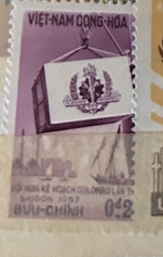
| SOURCE | TITLE| IMAGE MATCH | click to source page |
| Tripod (Lycos) | Vietnam, 1957 Stamp Year-Page 1 of 2 |  |
| eBay | Vintage stamps, Lot of 5 unused, Vietnam, 1957, Cong-thu, Buu Chinh, .20d - 3d | eBay | 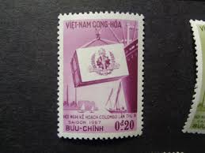 |
| PicClick UK | RARE 1956 SOUTH Vietnam SPECIMEN Stamps POST OFFICE SAIGON MNH £94.29 - PicClick UK | 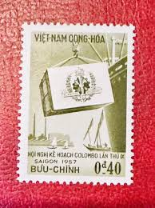 |
| Mercari | ST-981) Stamp: 1957 Vietnam, Scott #70 Rare | Mercari | 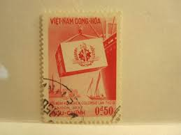 |
| eBay | 1957 South Vietnam Stamps Loading Cargo Scott # 68-72 Imperf. MNH | eBay |  |
| eBay | 1959 S. Vietnam Stamps Diesel Engine, Map of North & South Scott # 116 MNH | eBay | 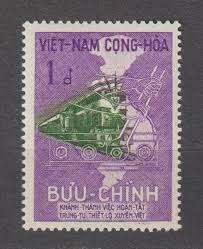 |
| eBay | 🐘Vietnam - 2 MH postage stamps - 1951 & 1957 | eBay | 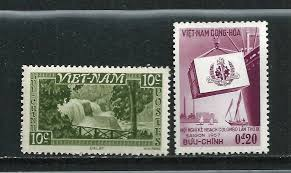 |
| eBay | 1963 S. Vietnam Soldiers of the Republic Set of 4 Un-Used Stamps #267st | eBay | 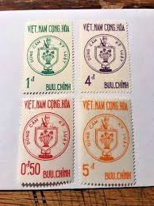 |
| eBay | SOUTH VIETNAM 1957 9th Colombo Plan Conference Saigon 68-72 Hội Nghị Colombo MNH | eBay |  |
| eBay | One 1950s South Vietnamese Stamp , Vietnam , 6 Dong 6d Stamp | eBay | 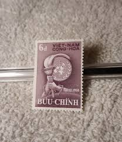 |
| eBay | Vietnam-S. 1963 Sc # 215-18 MLH OG | eBay | 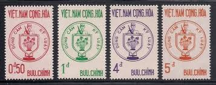 |
| eBay | SOUTH VIETNAM 1963 Fighting Soldiers for the Republic 215-218 Mint Hinged | eBay | 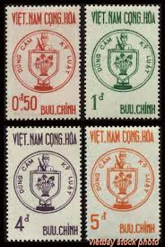 |
| eBay | SOUTH VIETNAM 1963 #215 BLOCK OF 4 MNH -S19085-10 | eBay | 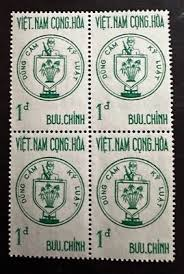 |
| eBay | Vietnam - S 1963 Sc # 211-14 MLH OG | eBay | 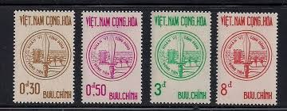 |
| eBay | 1963 South Vietnam Stamps Common Defense Emblem Scott # 211-214 MNH | eBay | 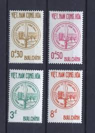 |
| eBay | SOUTH VIETNAM (VNCH). Writer. Collection Postcard. New. Unused. VNCH 3 | eBay | 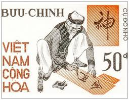 |
| eBay | 1970 South Vietnam Stamps Building Worker, Pagodas and Bridge Scott # 375 MNH | eBay | 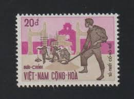 |
| eBay | Viet Nam, Scott 436 ** 488 in Used Condition | eBay | 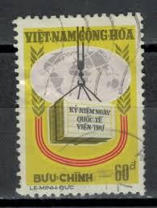 |
| eBay | VIETNAM Sc M3(SG M3 TY I)(*)VF NGAI 1960 BROWN OLIVE/GREENISH GRAY $15 | eBay | 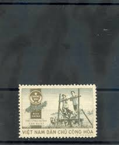 |
| eBay | Vietnam 1988 (1886-1887) Map | eBay | 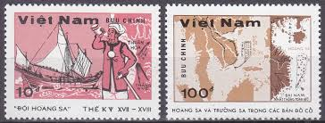 |
| eBay | 1965 SAIGON SOUTH VIETNAM CACHET TEM THO DAI HOC FIRST DAY COVER | eBay | 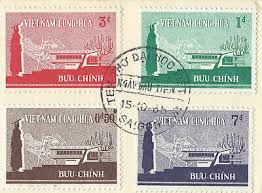 |
| eBay | VIETNAM 1957 140-150 ** MNH BEAUTIFUL SETS (I3512 | eBay | 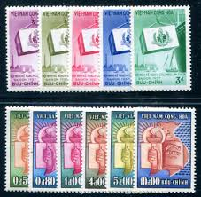 |
| eBay | VIET NAM SUD #140-43 4 STAMPS | eBay | 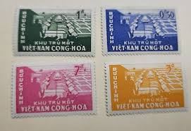 |
| eBay | N.536 -Vietnam- Paracel and Spratley Islands | eBay | 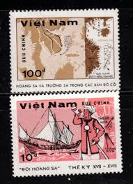 |
| eBay | VIETNAM, VIET MINH MI 37(*)VF NO GUM ISSUE $72 | eBay | 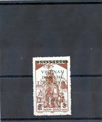 |
| eBay | South Vietnam 1963 (288-291) Emblem | eBay | 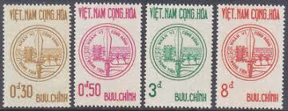 |
| eBay | VIETNAM 1958 1 Imperf PROOF Black & 2 Imperf MNH UNESCO #92 Unissued Colors! | eBay | 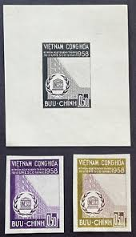 |
| eBay | Vietnam SC 140-3 VFU (1edq) | eBay | 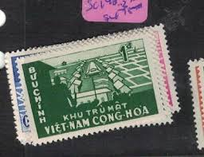 |
| eBay | South Vietnam 1958 UNESCO Headquarter in Paris 92-95 MNH | eBay | 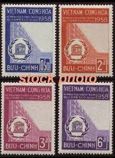 |
| eBay | SOUTH VIETNAM 1973 National Development 457-459 Phát Triển Quốc Gia MNH | eBay | 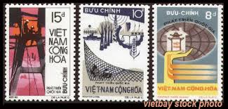 |
| eBay | 1967 South Vietnam Stamps Potter, Vases and Lamp Scott # 311 MNH | eBay | 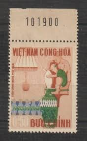 |
| eBay | SOUTH VIETNAM 1963 Common Defense Effort 211-214 Nhân Vị Cộng Đồng Mint Hinged | eBay | 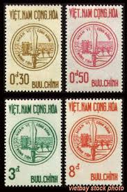 |
| eBay | 1967 South Vietnam Stamps Potter, Vases and Lamp Scott # 311 MNH | eBay | 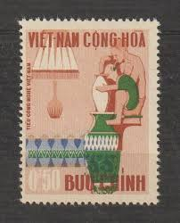 |
| eBay | Vietnam #Mi261 NGAI 1963 Interplanetary Spacecraft [254 YT324] | eBay | 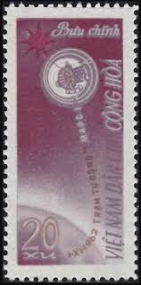 |
| eBay | Vietnam 1962 IMPERVED set space/moon/Raumfahrt stamps (Michel 217/19 U) MNH | eBay | 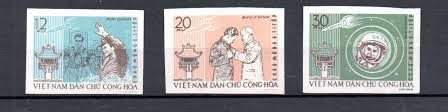 |
| eBay | VIETNAM, VIET MINH MI 43(*)VF NO GUM ISSUE $72 | eBay | 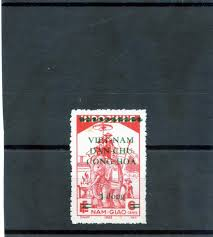 |
| eBay | Vietnam Scott # 514 - MNH - Nice Centering - CV=$30.00 (6-C79) | eBay | 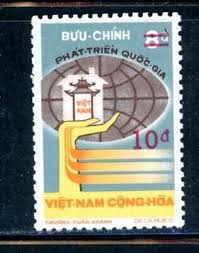 |
| eBay | Vietnam Stamp Scott #320, 321, Lions Club / Literacy, Lot of 2, MLH, SCV$3.75 | eBay | 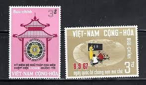 |
| eBay | ICOLLECTZONE Vietnam 88-91 VF hinged | eBay | 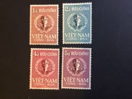 |
| eBay | 1959 S. VN Stamps Block 4 Diesel Engine, Map of North & South St # 116 MNH | eBay | 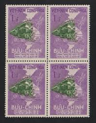 |
| eBay | VIETNAM 1986, COMMUNIST PARTY - 6TH CONGRESS, Scott 1704 SOUVENIR SHEET, MNH | eBay | 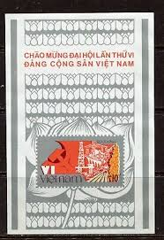 |
| eBay | AOP Vietnam 1958 sets MNH | eBay | 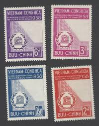 |
| eBay | VIET NAM - INTERESTING MINT & USED GROUP REMOVED FROM PAGES - X197 | eBay | 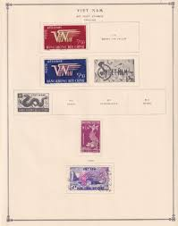 |
| eBay | 1965 South Vietnam Stamps Women of Various Races Sc # 258 - 260 #42st | eBay | 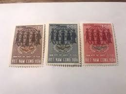 |
| eBay | 1967 South Vietnam Stamp MNH Foundation of Vietnamese Cultural Institute w Code | eBay | 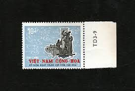 |
| Freestampcatalogue.com | Stamps from Vietnam, South - Freestampcatalogue.com - The free online stampcatalogue with over 500.000 stamps listed. | 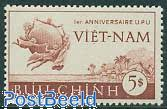 |
| Etsy | Handmade VIETNAM / VIETNAMESE Greeting Card - Made With Authentic Postage Stamps - Blank Inside - Perfect for Any Occasion - Etsy | 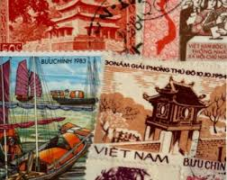 |
| eBay | 1988 Vietnam Stamps Hoàng Sa, Trường Sa Islands Sc # 1821-1822 MNH | eBay | 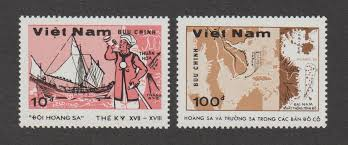 |
| eBay | SOUTH VIETNAM - cover with 1965 - Flower set | eBay | 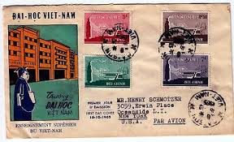 |
| eBay | Viet Nam South 266-269, MNH. Mi 343-346. Higher education 1965. Student, Map. | eBay | 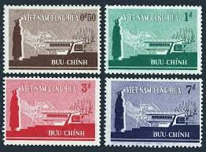 |
| eBay | Vietnam 1957 Sc# 74 Turch Map Constitution block 4 MNH | eBay | 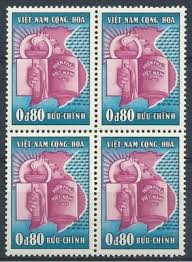 |
| eBay | Viet-Nam Scott #210 VF Used 1963 5 Piasters FAO Freedom From Hunger | eBay | 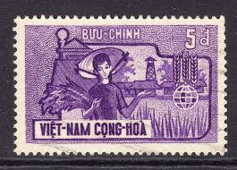 |
| eBay | Viet Nam 116 - 117 used | eBay | |
| eBay | 1969 North Vietnam Military Stamps Scott # M15 MNH | eBay | |
| eBay | Vietnam-S. 1960 Sc # 140-43 MNH (1-032) | eBay | |
| eBay | 1975 South Vietnam Deluxe / Proof Sheets Tháp Chàm Tower Temple MNH | eBay | |
| eBay | 1958 South Vietnam Stamps Torch and UN Emblem Scott # 96-99 MNH | eBay | |
| eBay | Vietnam 1996 (2802) Stamp on Stamp | eBay | |
| eBay | NORTH VIET NAM # 183 MNH TRADE UNION CONGRESS (2) | eBay |